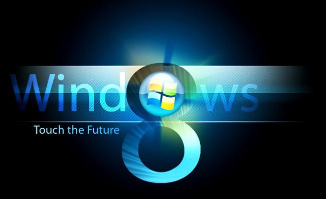

Ciência da Computação - DAW
Como os usuários receberam a versão beta do Windows 8
A recepção mista. De um lado há os que elogiaram as novidades técnicas introduzidas da base do sistema, como
o ganho de desempenho nas operações com arquivos, a solução de armazenamento virtual
(vários discos rígidos
funcionando como um só) ou o design da nova interface, chamada Metro.
A Microsoft precisa entrar no mercado de tablets e quer usar a força do Windows para isso. A computação
móvel é a nova tendêcnia e é para esse lado que aponta a interface Metro. Mas o Windows já está no seu 27º
ano de história. Há um legado de aplicativos criados quando não existiam os tablets. A duabilidade se repete
no Internet Explorer. Há duas versões do browser. Elas são diferentes e não falam entre si.